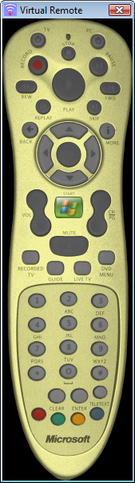

Virtual Remote is a small application for simulating remote control button presses. It can be run on any computer on the Local Area Network to simulate a user pressing a remote button at the server.
The interface is skinnable and you can edit your own virtual remote skins with the Skin Editor.
Right-Click in the Virtual Remote window to bring up the program menu to change the server address, change the skin, or to quit the program.
Virtual Remote is also accessible through it's own web interface. Connect to the computer Virtual Remote is running on through port 2481 to use the Virtual Remote Web Interface.
Virtual Remote can also be used from the command line to simulate button presses.
Command line parameters:
Use a specific IR Server:
-host [Host Address]
Insert a half second delay between virtual remote buttons:
~
Everything else is considered a virtual remote button.
To send the keycode 1123 use the following command line parameters:
VirtualRemote.exe 1123
To send multiple simulated buttons to a specific IR Server use the following command line parameters:
VirtualRemote.exe -host MediaServer 11223 1123223 aa2x3433d
To send multiple simulated buttons with half second delays between them:
VirtualRemote.exe key1112 ~ button443 ~ AA-FF-11-12
To send simulated buttons with spaces in their codes use quotation marks:
VirtualRemote.exe "Button 1" "Button 2"
Using command line parameters you can interface IR Server with any other software that supports launching external applications for IR Blasting, for example, for changing channels on a set top box.